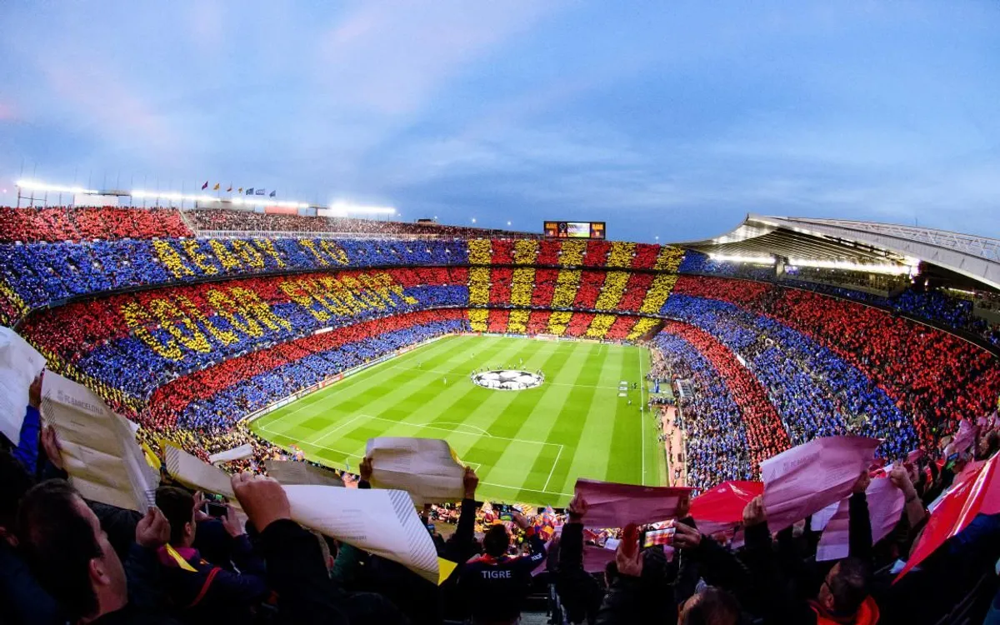
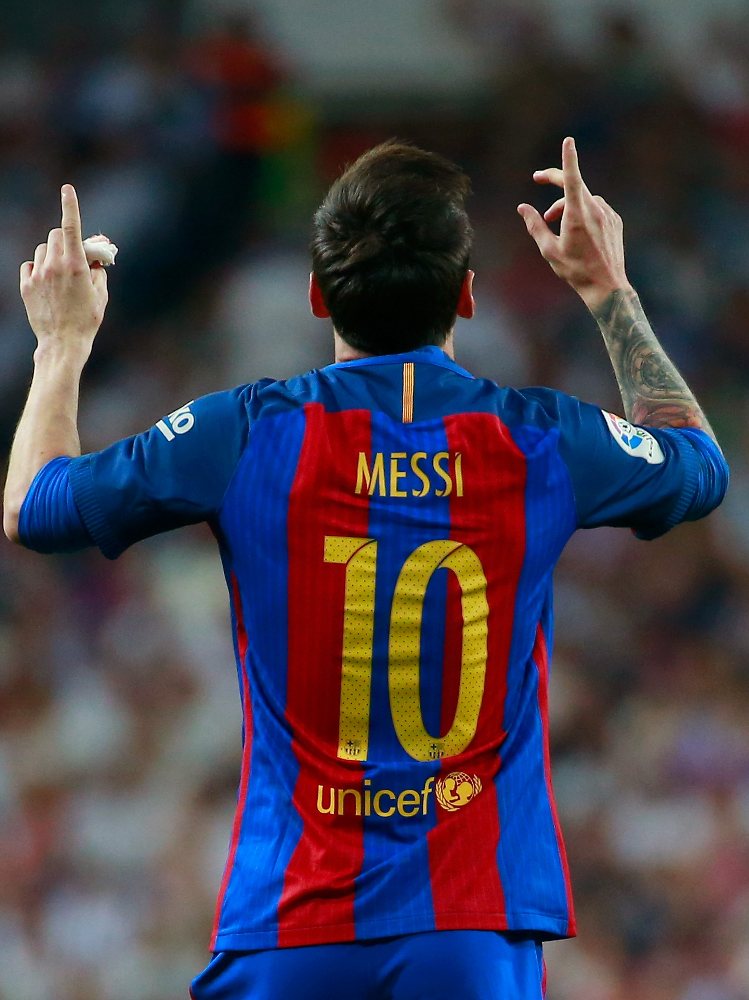

vamos demonstrar algumas informações sobre o time barcelona
veja a baixo a história do time barcelona
historia do barcelona
por: Diogo e Nathã
Més que un club. Bem-vindo ao universo Blaugrana
O FC Barcelona foi fundado em 29 de novembro de 1899 por Hans Gamper, um entusiasta do futebol suíço que colocou um anúncio em um jornal local para reunir entusiastas do esporte na Catalunha. A história do clube é marcada pela sua forte identidade cultural catalã, simbolizada pelo famoso lema
Primeiras Décadas (1899 - 1940)
Fundação: Hans Gamper e outros onze pioneiros fundam o clube em Barcelona.
Cores: As cores azul e grená (azulgrana) são adotadas desde os primeiros anos.
Primeiro Estádio: O clube passa por vários campos até inaugurar o Les Corts em 1922.
Guerra Civil: O clube sofre forte repressão política durante o regime franquista, e o presidente do clube, Josep Sunyol, é assassinado em 1936.
A Era Kubala e o Camp Nou (1950 - 1970)
László Kubala: O craque húngaro chega nos anos 50 e transforma o patamar do time.
Novo Estádio: Devido ao enorme sucesso de Kubala, o Les Corts fica pequeno.
O Camp Nou é inaugurado em 1957.

Chegada de Cruyff: Em 1973, o holandês Johan Cruyff é contratado como jogador, conquistando o campeonato espanhol e mudando a mentalidade do clube.
A Era Johan Cruyff no Barcelona transformou o clube através de duas passagens históricas:Como Jogador (1973–1978): Resgatou o orgulho catalão, quebrou um jejum de 14 anos sem o título espanhol e liderou o histórico 5 a 0 contra o Real Madrid.Como Treinador (1988–1996): Criou o lendário "Dream Team" (com Romário, Stoichkov e Guardiola), implementou o futebol de posse de bola e conquistou a primeira Champions League do clube em 1992, além de quatro ligas seguidas.
O Fim da Era:O declínio começou com a goleada sofrida por 4 a 0 para o Milan na final da Champions de 1994. Isso gerou uma reformulação mal sucedida no elenco, desgaste no vestiário e brigas públicas com o presidente Josep Lluís Núñez, culminando na demissão de Cruyff em 1996.
A próxima grande fase do Barcelona após a Era Cruyff foi a Era Ronaldinho e Frank Rijkaard (2003–2006).Embora o clube tenha conquistado títulos no fim dos anos 90 com Bobby Robson e Louis van Gaal, o Barcelona viveu uma grave crise política e um jejum de cinco anos sem taças no início dos anos 2000. O verdadeiro ressurgimento do clube ocorreu a partir de 2003.O Início:
A Revolução de 2003A Chegada de Ronaldinho Gaúcho: Contratado em 2003, o brasileiro devolveu a alegria, a magia e a autoestima à torcida e ao clube.
O Comando de Frank Rijkaard: O técnico holandês resgatou os conceitos de futebol ofensivo de Johan Cruyff.Reforços Estratégicos: Chegadas de jogadores como Deco, Samuel Eto'o, Rafael Márquez e Edgar Davids mudaram o patamar competitivo do time.O Auge: Domínio e a Segunda ChampionsO Bicampeonato Espanhol: O time conquistou a La Liga de forma consecutiva nas temporadas 2004/2005 e 2005/2006.O Título Europeu (2006): O ápice foi a conquista da Liga dos Campeões da UEFA de 2005/2006 contra o Arsenal, em Paris, quebrando um jejum continental de 14 anos.
O Surgimento de Messi: Foi nessa fase que um jovem Lionel Messi foi promovido ao time profissional, sendo apadrinhado por Ronaldinho.

O Fim do Ciclo:A exemplo do Dream Team de Cruyff, essa era também ruiu rapidamente devido ao relaxamento do elenco, problemas de indisciplina e queda de rendimento de Ronaldinho e Deco a partir de 2007. Isso abriu espaço para a demissão de Rijkaard em 2008 e o início da lendária Era Pep Guardiola.
O Começo: A União Perfeita (2014)A Peça que Faltava: Em julho de 2014, Luis Suárez foi contratado para se juntar a Lionel Messi e Neymar, que já jogavam juntos desde 2013.
O Comando de Luis Enrique: Sob a liderança do novo técnico, o trio superou o ceticismo inicial e desenvolveu uma química perfeita baseada na amizade e na ausência de vaidade.
A Tríplice Coroa (2015): Logo na primeira temporada (2014/15), o MSN destruiu defesas e conquistou a Champions League, a La Liga e a Copa do Rei, marcando 122 gols juntos no ano.O Fim: O Desmonte do Ataque (2017)A Saída de Neymar (2017): O trio MSN chegou ao fim em agosto de 2017, quando o Paris Saint-Germain pagou a multa rescisória recorde de €222 milhões para tirar Neymar do clube.
O Fim de Suárez (2020): Após uma goleada histórica de 8 a 2 sofrida para o Bayern de Munique e em meio a uma grave crise financeira e diretiva, Suárez foi dispensado pela diretoria de forma conturbada.
O Adeus de Messi (2021): O ponto final definitivo da era ocorreu em agosto de 2021. Asfixiado por dívidas e pelas regras financeiras da La Liga, o Barcelona não conseguiu renovar o contrato de Lionel Messi, que deixou o clube chorando em sua despedida.